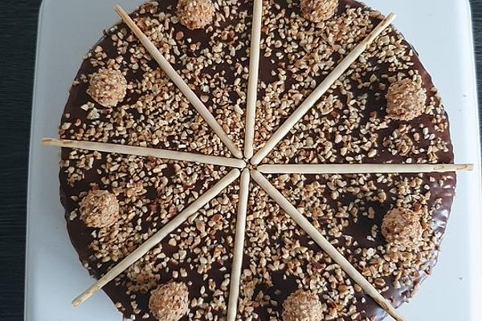

Mishka Cake recipe

Description
Soft and crumbly chocolate walnut cake called Mishka, which means bear in Russian. Have to admit that after trying the original recipe, I wasn't quite impressed with this chocolate walnut cake. It turned out so dry, that I even used sugar syrup to moisten the top layer. Decided to do a few changes and share it with you.Hope you guys try and like it.
Ingredients
For the dough:
- 1 cup sour cream
- 1 packet baking powder
- 3 tablespoon margarine
- 1 packet vanilla sugar
- 3 glasses flour
- 2 teaspoons cocoa
- 1 glass sugar
- 100 g nuts, chopped
For the cream
- 2 cups sour cream
- 200 g sugar
For the glaze
- 100 g chocolate (block chocolate)
Steps
- Mix the sour cream, baking powder, flour, vanilla sugar, sugar and margarine to form a batter. Divide the dough in two. Mix the cocoa in half. Divide each of the two halves into two parts again.
- Roll out the four parts to form bases. Sprinkle the nuts (two whites, two browns) on three bases and press down a little. Bake all bases individually at 220 ° C until golden yellow. Then cut round while hot, e.g., using a large plate.
- As soon as the bases have cooled down, mix the cream of sour cream and sugar. Brush the floors and the edges with it and stack them.
- For the glaze, heat the block chocolate in a water bath and spread it over the kitchen. It is best to serve the next day so that the cake can really pull through.